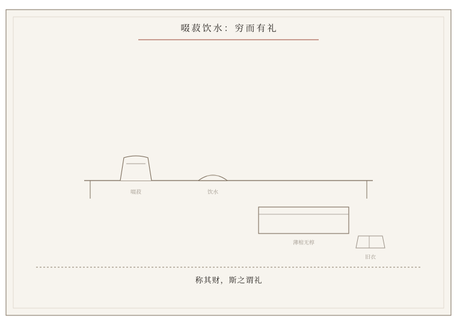

檀弓下 · 四·五十二 · 第 377 课
子路曰：「伤哉，贫也！生无以为养，死无以为礼也。」孔子曰：「啜菽饮水，尽其欢，斯之谓孝。敛手足形，还葬而无椁，称其财，斯之谓礼。」
说什么事：子路叹贫：活着不能好好供养，死了不能好好行礼。孔子答：喝豆粥、饮清水，只要能让父母尽心欢悦，这就是孝；死了只用衣被敛住头足形体、速葬而无椁，只要与自己的财力相称，这就是礼。
落在哪一层：以「称」定礼。礼不在丰，在称。
为何编在此位：上节论止恶之言，此节论安贫之教。一个把别人的贪止住，一个把自己的愧解开。
【经】子路曰：「伤哉，贫也！生无以为养，死无以为礼也。」孔子曰：「啜菽饮水，尽其欢，斯之谓孝。敛手足形，还葬而无椁，称其财，斯之谓礼。」
【注】还犹疾也。谓不及其日月。
【疏】此一节论孝子事亲称家之有无之事。／孔子以子路伤贫，故答之云「啜菽饮水」，以菽为粥，以常啜之。饮水更无余物，以水而已。虽使亲啜菽饮水，尽其欢乐之情，谓使亲尽其欢乐，此之谓孝。答上「生无以为养」。／「敛手足形」者，亲亡，但以衣棺敛其头首及足，形体不露，还速葬而无椁材，称其家之财物所有以送终，此之谓礼。答上「死无以为礼」。
子路 仲由，孔子弟子，家贫。
伤哉 可悲啊。
无以为养 没有东西拿来供养。
啜菽 喝豆粥。啜，饮；菽，豆。
尽其欢 使父母尽其欢乐之情。
敛手足形 以衣衾敛住头、手、足，使形体不外露。
还葬 速葬。还，疾速。注「谓不及其日月」。
椁 外棺。
称其财 与自家财力相称。称，相副。
子路说：「可悲啊，穷！活着没有东西供养父母，死了没有东西行礼。」孔子说：「喝豆粥、饮清水，只要能让父母欢心，这就是孝。死了只用衣衾敛住头足形体，速葬而没有外棺，只要与自己的财力相称，这就是礼。」
此章一问一答。问的是一个「没有」，答的是一个「够」。
子路把「孝」与「礼」都挂在物上，孔子把两样都从物上取下来。
第一层 「伤哉贫也」：孝子的实苦 子路之叹，非抱怨，是自愧。
此一节须先认这份苦为真。 孔子不曾说「贫何足叹」，他说的是「贫亦可为」。
第二层 「啜菽饮水，尽其欢」 疏云：「虽使亲啜菽饮水，尽其欢乐之情……此之谓孝。」
此句的重心在「尽其欢」，不在「啜菽饮水」。 豆粥清水是条件，尽其欢是内容。
故孝之量不在馔之丰，在亲之欢。若丰而亲不欢，丰不为孝；若薄而亲欢，薄即是孝。
第三层 「敛手足形」：丧之最低线 疏云「但以衣棺敛其头首及足，形体不露」。
此四字划出一条底线：礼所不许者，是「形露」。 至于棺之厚薄、椁之有无、器之多少，皆在其外。
此一线极要紧。 有了它，贫者才有一条可行之路；没有它，贫者便只能自弃于礼外。
第四层 「还葬而无椁」：速与薄的许可 注云「还犹疾也，谓不及其日月」。
常礼有待葬之期，此为速葬；常礼有椁，此为无椁。二者本是减礼，而孔子许之。
许的理由只一条：「称其财」。
第五层 「称」字：礼的尺度 此章之眼在一「称」字。
称者，相副也。礼自有一套绝对值（几日而葬、几重之椁），又有一套相对值（称其财）。 富者不得减于绝对值以下，贫者不得强于其财以上。
此一双轨，使礼既不被富人买断，也不把穷人挡在门外。
第六层 「斯之谓礼」：把礼从物上解下来 子路说「死无以为礼」，是把礼当作一套器物。
孔子答「称其财，斯之谓礼」，是把礼当作一种分寸。器物可缺，分寸不可缺。
此一句，是《檀弓》全篇对丧礼奢侈之风的总答。
与今日何干 今之婚丧嫁娶，多以花费论诚意，以排场论孝心。
此章给两句话：尽其欢，称其财。 前一句管心，后一句管力。
| 左 | 右 |
|---|---|
| 生无以为养 | 子路之愧 |
| 死无以为礼 | 子路之愧 |
| 啜菽饮水 | 薄 |
| 尽其欢 | 孝在此 |
| 敛手足形 | 底线 |
| 还葬无椁 | 减礼 |
| 称其财 | 尺度 |
| 斯之谓礼 | 礼在分寸 |
| 贫亦可为 | 孔子之答 |
画室内一角的席，视点平视。席上左置一只陶豆，豆中盛着稀薄的粥，粥面可见几粒豆；右置一只水盂，盂中清水。席前一具极简的棺，只画一口薄板的单线长框，框外没有再套一层。棺旁地上放着一件叠好的旧衣。三人之物皆不高，皆贴地。不画文字。赭色只用在那件旧衣的领口一处。
